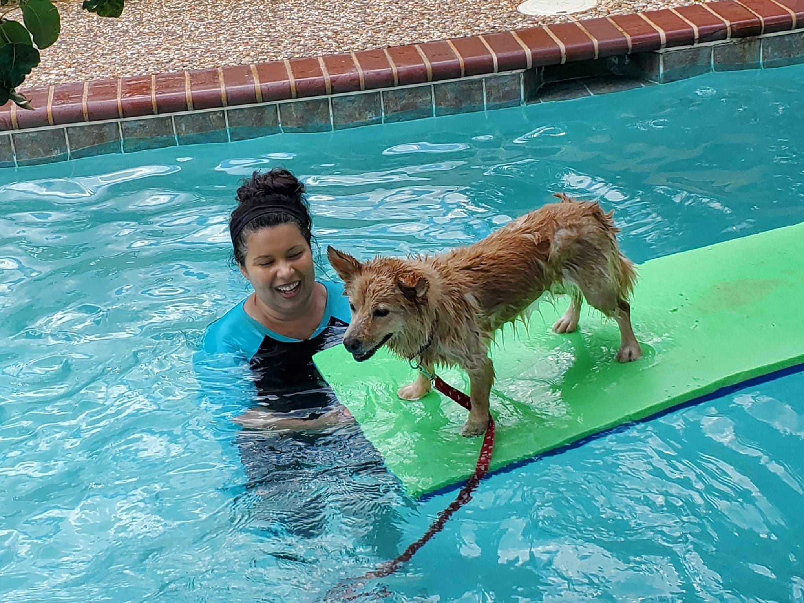

Software Engineer, Machine Learning Engineer, Programmer, Team Lead and Team Player
Hi, my name is Melissa

Programming and problem-solving have always been hobbies that I enjoy, from coding game jams to revamping websites and databases for fun. I had years of experience as an administrative assistant, as an event planner, and as a server, before I went back to college to complete my dream of earning my Bachelor of Science in Computer Science. Thanks to this experience and my perseverance I was able to thrive and take on new opportunities in multiple technical positions such as a machine learning engineering intern, where I was promoted to team lead, and hired back on as a software engineer for a contract project. This summer I had the privilege of leading several team projects from start to finish in a software engineering fellowship. I took a lot of initiative, working long hours to teach myself and then multiple teams, because that is who I am - someone who tries their hardest, always. This is why I have decided to help strengthen my subject knowledge and experience by pursuing a Masters Degree in Data Science.
Hobbies
I enjoy playing board games - I am really good at Tiny Epic Galaxies. I also love playing chess and Tetris. I met my husband playing Magic: the Gathering. <3 I also really enjoy hiking with my dogs when it is not 108 degrees outside! I have an 18-year-old kitty named Sammy, and even a tarantula, too! In my spare time, I assist with transportation for animal rescue. I have helped coordinate interstate travel connecting pets seeking rescue with their future owners, setting up handoffs via both car and airline travel.